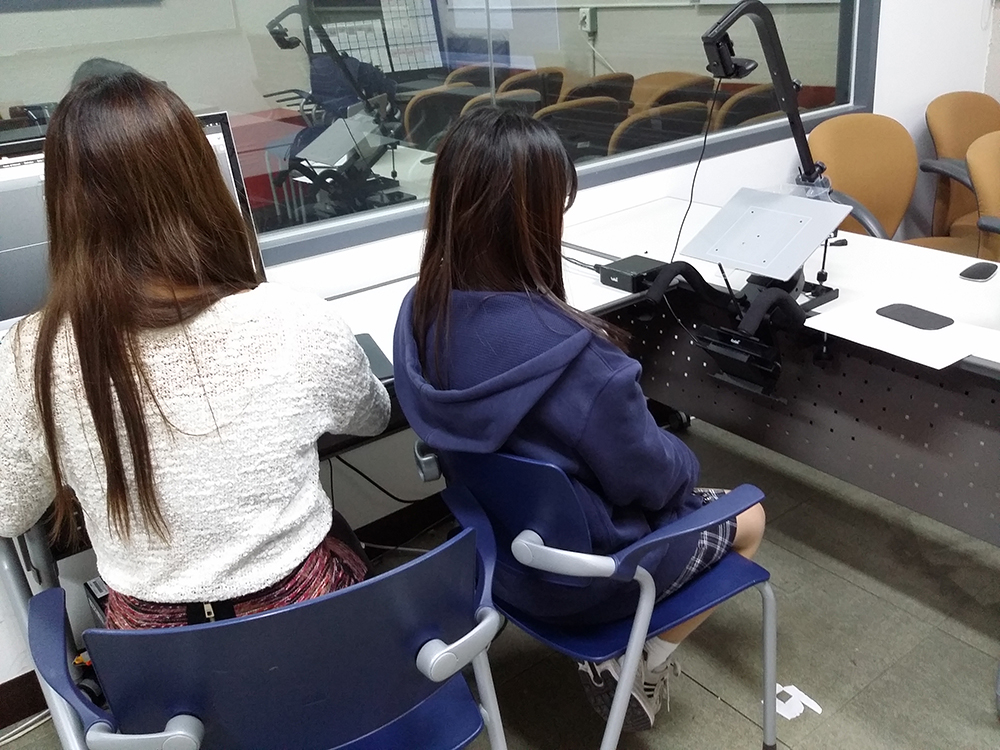

캡스톤 디자인 주간 보고서 [12주차]
| 팀 명 | 11팀 |
|---|---|
| 과제명 | 알바천국 감성 푸쉬 서비스 기획 |
| 회의날짜 | 2016년 11월 15일 ( 16:00 ) ~ 2016년 11월 15일 ( 20:00 ) |
| 참석자 | 성명 | 역할 | 서명 |
|---|---|---|---|
| 안가은 | 회의록 작성, 팀장 | ||
| 김윤신 | 기획 | ||
| 박채원 | 기획 | ||
| 조영지 | 기획 |
| 주간 보고 내용(한주의 내용을 간단하게 정리) |
|---|
|
12주차에는 알바천국 앱과 경쟁사 앱인 알바몬 앱을 대상으로 시선 추적을 통한 사용자 경로 조사를 실시하였습니다.  10주차에 작성한 UT 시나리오를 토대로 테스트를 진행하였으며, 테스트 진행 후 테스트에 대한 인터뷰를 사용자마다 진행하였습니다. 테스트에 사용된 UT 시나리오 내용은 다음과 같습니다.
|
| 다음 진행 방향 및 계획 |
|---|
|
테스트 결과 도출 리뉴얼 시안 스토리 보드 작성 |
* 주차별 주간 보고서를 필히 제출